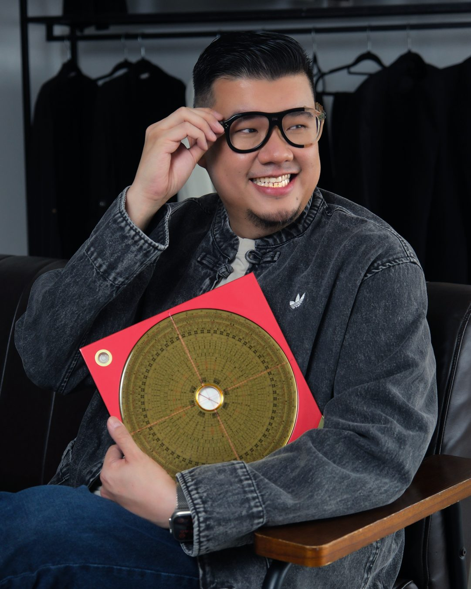

100%
Confidentiality
Who you are, what you share and what you decide are held in complete confidence.
About
Chinese Metaphysics Consultant, Manila
Bazi | Feng Shui | Date Selection | I Ching

Born and raised in a Filipino-Chinese family with ancestral roots in Fujian, China, his connection to Chinese traditions began long before his formal study of Chinese metaphysics.
Growing up with his grandmother in the family's ancestral home, Kesler was immersed in the customs and observances that formed an important part of family life. His grandmother, a devout Buddhist, regularly brought him to Chinese temples, where he became familiar with traditional religious practices and ceremonies.
At home, he learned to prepare ancestral offerings for important Chinese festivals and family memorial dates, developing an early appreciation for the traditions passed down through generations.
His mother introduced him to another aspect of Chinese tradition, teaching him how to consult the Chinese almanac for basic date selection. These experiences made Chinese customs, rituals, and traditional beliefs a natural part of his upbringing.
Kesler later pursued a degree in Philosophy at De La Salle University, where he developed a particular interest in Asian philosophical traditions, especially Chinese philosophical thought. His academic interests deepened an intellectual curiosity that had grown alongside his cultural upbringing.
What began as a lifelong interest gradually developed into a more serious pursuit. After years of independent study and informal practice, offering guidance to friends, family, and a small circle on home layouts, personal directions, and timing-related questions, Kesler sought a more structured understanding of Chinese metaphysics through direct instruction from established teachers.
This led him to study in person under Grand Master Raymond Lo, completing Four Pillars of Destiny Levels 1 and 2, Feng Shui Levels 1 and 2, and I Ching Divination.
He subsequently continued his training under Senior Master Yap Boh Chu of the Yap Cheng Hai Academy, where he continues to advance his studies toward the Advanced Level.
His commitment to professional development also extends to the wider international community of Chinese metaphysics practitioners. Kesler joined the International Feng Shui Association (IFSA) as an Affiliate Member in 2024 and was accepted as an Associate Member in 2026, marking another step in his continued professional development.
Today, Kesler's practice draws on these complementary influences: a childhood immersed in Filipino-Chinese traditions, an enduring intellectual interest in Chinese philosophy, years of personal exploration, and formal training under established teachers.
Through Bazi, Feng Shui, Date Selection, and I Ching, he approaches each interpretation with respect for traditional methods, attention to individual circumstances, and an emphasis on making complex principles clear and practically relevant.
His aim is to bring the depth of traditional Chinese metaphysical knowledge into a professional consultation experience that is thoughtful, accessible, and grounded in careful interpretation.
Philosophy
His approach is grounded in established traditional methods while recognizing that each person, property, and situation requires individual consideration.
Bazi provides a framework for examining personal characteristics, elemental relationships, life patterns, and changing influences over time. Feng Shui examines the relationship between a property and its physical environment. Date Selection evaluates suitable timing for important activities, while I Ching may provide additional interpretive perspectives when relevant.
These disciplines involve more than calculations alone. Understanding how their principles apply to particular circumstances requires technical knowledge, experience, and professional judgment.
Kesler places particular importance on making complex concepts understandable. His consultations are structured to help clients follow the interpretation, recognize its relevance to their circumstances, and understand the considerations being discussed.
He acknowledges the predictive dimension of Chinese metaphysics while maintaining appropriate distinctions between traditional interpretations, potential developments, and guaranteed outcomes.
Above all, his philosophy is to respect the traditional foundations of the practice while applying them thoughtfully to contemporary life.
His professional authority rests on the quality of the analysis, the clarity of the explanation, and the care taken in each consultation.
“The reading informs. The decision remains yours.”
100%
Who you are, what you share and what you decide are held in complete confidence.
Agency
Advice is offered to inform a choice, never to replace it. The authority to decide stays with you.
Location
Makati, Philippines
Consultations by appointment only